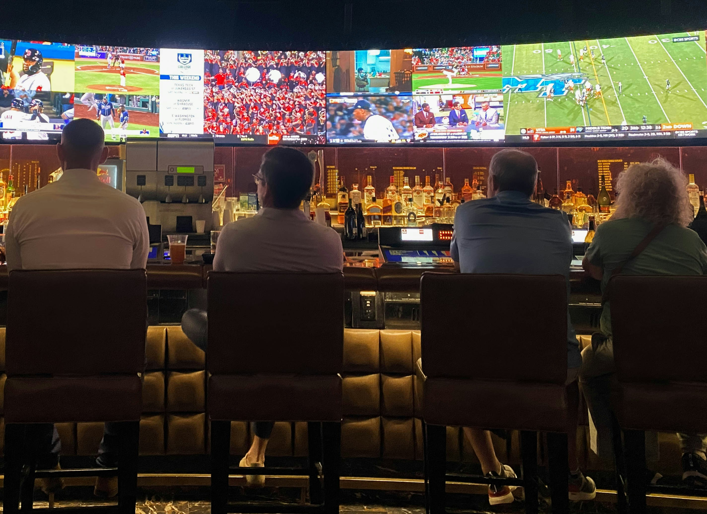
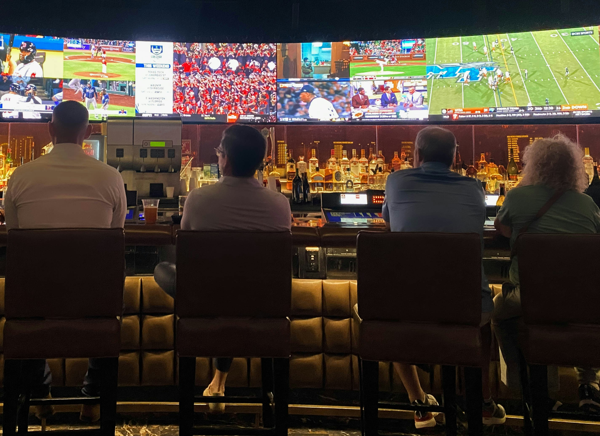

Olemme vakaasti sitä mieltä, että Helsingistä ei saa tarpeeksi hyvää döneriä. Halusimme muuttaa tämän ja luoda ravintolan, joka tarjoaa laadukasta ja herkullista döneriä kaikille kaupunkimme asukkaille ja vierailijoille.
Berliini on dönerin syntypaikka, ja siksi päätimme hakea inspiraatiota sen döner-paikoista. Matkamme aikana tutustuimme paikalliseen döner-kulttuuriin ja oppimiamme perinteitä ja makuja hyödyntämällä haluamme tarjota asiakkaillemme autenttisen döner-elämyksen.
Urheiluravintolat ovat vähentyneet Helsingin katukuvasta, ja halusimme tuoda tähän ratkaisun. Ravintolamme ei ole vain paikka herkullisen dönerin nauttimiseen, vaan myös kohtaamispaikka urheilun ystäville. Haluamme luoda ilmapiirin, jossa ihmiset voivat nauttia hyvästä ruoasta ja samalla seurata suosikkiurheilulajejaan.
Tavoitteenamme on tarjota asiakkaillemme ainutlaatuinen ja maukas kokemus sekä tuoda ripaus Berliinin tunnelmaa ja urheilufiilistä Helsingin sydämeen. Tule nauttimaan kanssamme herkullisesta döneristä ja urheilun tunnelmasta!
 
